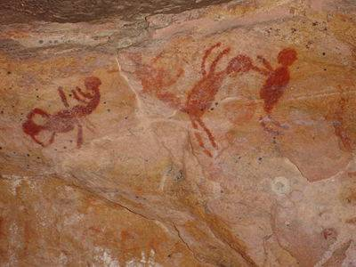
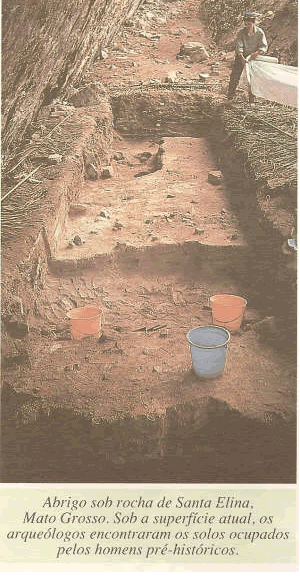
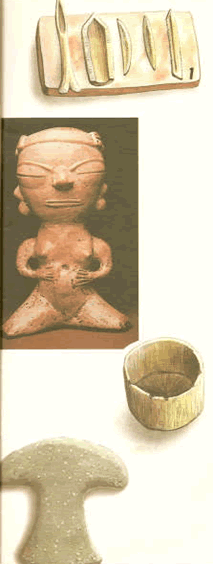
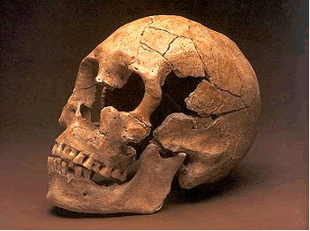
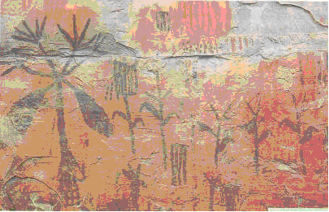
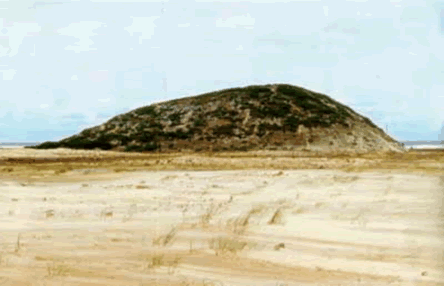

|
Brasil
Paleo�ndio
por Regina Oliveira
Rodrigues
�Toda a
hist�ria n�o escrita da humanidade se
encontra
Inserida
nas folhas sobrepostas, umas �s outras, do
livro da
terra, e a t�cnica das escava��es tem como
primeiro
objetivo o
assegurar uma leitura correta das mesmas�.
(GOURHAN,
1961).
.gif)

Um
exemplo das pinturas que podem ser encontradas no parque nacional
da Serra da Capivara - PI, �
esta representado provavelmente
uma cena de parto.
O que �
arqueologia?
A
maioria das pessoas tem uma id�ia do que seja arqueologia, e se
imagina viajando para regi�es distantes e remotas, vivendo aventuras
incr�veis.Esta � uma id�ia rom�ntica de
arqueologia.
A
reconstru��o da pr�-hist�ria brasileira resulta dos in�meros
vest�gios que indicam a presen�a humana no espa�o que ora
ocupamos.Investiga-se a hist�ria que n�o foi escrita por meio desses
registros, os objetos manufaturados pelo homem, os quais foram
preservados e que hoje s�o chamados artefatos.
Os
vest�gios podem ser diretos, ou seja, testemunho materiais presentes
nos n�veis arqueol�gicos (cacos de cer�mica, ossos, l�ticos,
registros rupestres, etc.) ou indiretos, sinais de objetos j�
ausentes no s�tio arqueol�gico (mudan�a de colora��es do solo,
vest�gios de postes, etc.).

A arqueologia
Brasileira
O Parque
Nacional da Serra da Capivara foi criado em 1975 e est� localizado
no sudeste do Estado do Piau�, ocupando �reas dos munic�pios de S�o
Raimundo Nonato, Jo�o Costa, Brejo do Piau� e Coronel Jos� Dias. Tem
129.140 hectares e seu per�metro � de 214 quil�metros.
Foi
criado para proteger uma �rea na qual se encontra o mais importante
patrim�nio pr�-hist�rico do Brasil. Trata-se de um parque
arqueol�gico com uma riqueza de vest�gios que se conservaram durante
mil�nios, devido � exist�ncia de um equil�brio ecol�gico, hoje
extremamente alterado. O patrim�nio cultural e os ecossistemas
locais est�o, portanto, intimamente ligados, pois a conserva��o do
primeiro depende do equil�brio desses ecossistemas. O equil�brio
entre os recursos naturais � o condicionante na conserva��o dos
recursos culturais e foi o que orientou o zoneamento, a gest�o e o
uso do Parque pelo poder p�blico.
� um
local com v�rios atrativos, monumental museu a c�u aberto, entre
bel�ssimas forma��es rochosas, onde encontram s�tios arqueol�gicos e
paleontol�gicos espetaculares, que testemunham a presen�a de homens
e animais pr�-hist�ricos. Foi tombado em 1991 pela Unesco, sendo que
dos 400 s�tios arqueol�gicos do parque, pelo menos dez j� foram
encontrados vest�gios de presen�a humana que podem alcan�ar mais de
40.000 anos.
Possui
v�rios s�tios arqueol�gicos e o Museu do Homem Americano. Ao longo
de 14 trilhas e 64 s�tios arqueol�gicos abertos � visita��o,
encontramos tesouros, como os peda�os de cer�micas mais antigos das
Am�ricas, de 8.960 anos. No circuito dos Veadinhos Azuis, podemos
encontrar quatro s�tios com pinturas azuis, as primeiras desta cor
descobertas no mundo.
As
pinturas rupestres s�o as manifesta��es mais abundante, consp�cua e
espetacular deixada pelas popula��es pr�-hist�ricas que viveram na
�rea do Parque Nacional, desde �pocas muito recuadas. Os tr�s s�tios
que apresentaram as mais antigas data��es obtidas na �rea do Parque
Nacional s�o abrigos-sob-rocha. Os homens utilizaram a parte
protegida desses abrigos como casa, acampamento, local de
enterramentos e suporte para a representa��o gr�fica da sua tradi��o
oral.
No Parque
Nacional da Serra da Capivara, onde est�o os achados arqueol�gicos
do homem mais antigo das Am�ricas, foram localizadas na regi�o urnas
funer�rias, f�sseis humanos, de mastodontes, lhamas, tigres
dentes-de-sabre e pregui�a-tatus gigantes. Suas pinturas rupestres,
que representam rituais sexuais e de ca�a dos animais, foram
declaradas patrim�nio da humanidade pela Unesco. Al�m da import�ncia
hist�rica e cultural, a Serra da Capivara possui paisagens
bel�ssimas.
O maior
atrativo do Parque � a densidade e diversidade de s�tios
arqueol�gicos portadores de pinturas e gravuras rupestres
pr�-hist�ricas. Durante mil�nios as paredes dos s�tios foram
pintadas e gravadas por grupos humanos com diferentes
caracter�sticas culturais que se refletem nas escolhas gr�ficas que
aparecem nos s�tios. O visitante pode hoje observar um produto
gr�fico final que foi realizado gradativamente e que pela sua
narratividade evoca fatos da vida cotidiana e cerimonial da vida em
�pocas pr�-hist�ricas. A esse interesse antropol�gico se soma uma
rara beleza e qualidade art�stica das obras que apesar de tra�os
similares �s pinturas pr�-hist�ricas das cavernas da Fran�a e da
Espanha, abrigos sob rocha da Austr�lia, apresentam um perfil
t�pico, �nico na regi�o do Nordeste do Brasil.
Cer�mica
incisa pontiado, panela cuidadosamente escavada com pedra muito
dura, estatueta da cultura de Santar�m/PA, machado em forma de meia
lua.
Homem
de Lagoa Santa
foi o nome dado ao cr�nio descoberto por Peter
Lund
na gruta
do Sumidouro , na cidade de Lagoa
Santa
em Minas
Gerais.
Considerado
homem antigo da regi�o de Lagoa Santa estimasse que viveu pelo menos
12 mil anos. Seus primeiros vest�gios foram encontrados em 1840, por
Peter Lund, na Gruta da Lapinha no Sumidouro.

Cr�nio e
mand�bula de um 'homem de Lagoa Santa'

Representa��o
de ra�zes de mandioca - Minas Gerais
SAMBAQUIS � o nome
que foi dado � s�tios pr�-hist�ricos formados pela acumula��o de
conchas e moluscos, ossos humanos e de animais, que foram
descobertos em v�rias regi�es do Brasil, mas principalmente no
Sul.
Os
sambaquis nos provam a exist�ncia de comunidades de ca�adores e
coletores, os quais, consumiam os moluscos, para depois amontoar
suas cascas para morar sobre elas, j� que constitu�am um lugar alto
e seco.No interior dos sambaquis foram encontrados vest�gios de
fogueiras, instrumentos cortantes, amoladores, restos de mam�feros,
al�m de ossos de peixes, r�pteis e baleias Sabe-se, portanto, que
este povo, que viveu h� mais de 1.500 anos atr�s, j� produzia
machados de pedra polida, ornamentos de conchas, instrumentos feitos
de ossos de animais e zo�litos ou pequenas pe�as esculpidas em pedra
representando animais.Foram ainda encontradas ossadas humanas,
depositadas com seus pertences, o que nos leva a acreditar que os
sambaquis tamb�m eram usados como Monumentos
Funer�rios
Ocupa��o
ap�s ocupa��o, passou-se mil�nios, o que fez com que os amontoados
de moluscos alcan�assem alturas fant�sticas. O Estado de Santa
Catarina possui o maior sambaquis do mundo, espalhados pelo seu
litoral, de norte a sul. Esses sambaquis chegaram a ter centenas de
metros de extens�o por 25 metros de altura e idade aproximada de
5.000 anos.
O povo
dos sambaquis ignoravam a olaria, a agricultura, a domestica��o
normal de qualquer esp�cie, mesmo o c�o, que os �ndios atuais
conhecem. Vivia principalmente da pesca e da apanha, e muito pouco
da ca�a. N�o possuindo instrumentos mais potentes de arremesso,
talvez nem mesmo o arco e a flecha, a ca�a de animais grandes, como
o tapir, a on�a, certamente por meio de armadilha. A presen�a da
baleia explica-se pela freq��ncia com que este cet�ceo encalhava nas
nossas praias, fato muit�ssimo registrado ainda nos s�culos XVI e
XVII.
Como o
alimento era muito abundante no litoral, esse povo n�o precisava
ficar se deslocando como os do interior. S� deveriam ter o cuidado
de escolherem lugares elevados, pr�ximos da praia, onde tivessem
tamb�m alguma fonte de �gua doce e da� estabeleciam-se por anos, ou
at� s�culos.
COMO ERAM
ELES?
Entre as
caracter�sticas f�sicas mais marcantes deste povo est� nas
diferentes alturas dos esqueletos de homens, com uma m�dia de 1,60m,
e de mulheres, com 1,50m, ambos vivendo 30 a 35 anos em
m�dia.
O t�rax e
membros superiores bem desenvolvidos levam a crer que os indiv�duos
eram bons nadadores e provavelmente remadores de canoas. Tal
suposi��o � apoiada tamb�m pela presen�a de restos de peixes de
esp�cies como a garoupa e miragaia, t�picas de regi�es mais
profundas e com pedras que, para serem capturadas, exigiria que o
pescador se deslocasse da beira da praia.
Outra
caracter�stica importante � o desgaste de algumas regi�es da arcada
dent�ria, que aponta o costume deste povo consumir alimentos duros e
abrasivos. Apesar do n�mero de sambaquis existentes no Brasil n�o
ser consenso entre os arque�logos, � poss�vel que possam passar de
mil, com idades que variam de 1,5 mil a 8 mil anos, sendo que a
maioria tem cerca de 4 mil anos. As data��es s�o feitas atrav�s do
m�todo do carbono 14 em carv�es fossilizados em v�rias alturas de um
sambaqui.
No
Brasil, o estudo cient�fico dos sambaquis � relativamente recente e
mesmo em toda a Am�rica do Sul poucas s�o as an�lises, que foram
seriamente estudadas. Al�m disso, muitos s�tios arqueol�gicos j�
foram danificados. Muitos sambaquis foram destru�dos pela explora��o
inconseq�ente das pessoas.
A cultura
sambaqui desapareceu misteriosamente h� quase 1.000 anos.
Acredita-se que foram
exterminados
pelos tupis ou aculturado por eles.
Os
sambaquis constituem o alicerce b�sico para entendermos a cultura de
um long�nquo per�odo da evolu��o do homem, por isso � t�o importante
a sua preserva��o.

Santa
Catarina. |